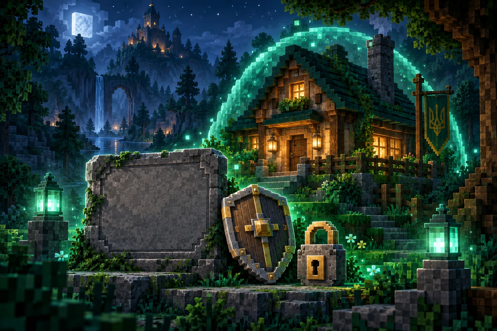

ДОВІДНИК
Команда знайдеться.
Пошук і короткі пояснення основних команд ВаніллаПлюс.
20 команд
| Команда | Що робить | Категорія | Копіювання |
|---|---|---|---|
/menu | Відкрити головне меню | Основні | |
/helper | Підказки щодо команд | Основні | |
/server hub | Повернутися до хабу | Основні | |
/spawn | Переміститися на спавн | Подорожі | |
/rtp | Випадкова телепортація | Подорожі | |
/sethome назва | Запам’ятати точку дому | Подорожі | |
/home назва | Повернутися додому | Подорожі | |
/homebed | Перейти до ліжка | Подорожі | |
/tpa нік | Запросити телепортацію | Подорожі | |
/warps | Перелік варпів | Подорожі | |
//wand | Отримати сокиру виділення | Привати | |
/rg claim назва | Зареєструвати виділену територію | Привати | |
/rg i | Переглянути дані регіону | Привати | |
/co inspect | Перевірити історію блоків | Привати | |
/bal | Перевірити баланс | Торгівля | |
/shop | Відкрити магазин | Торгівля | |
/ah | Відкрити аукціон | Торгівля | |
/trade | Обмін із гравцем | Торгівля | |
/clan | Меню кланів | Спільнота | |
/msg нік повідомлення | Написати гравцю | Спільнота |
Такої команди не знайшли.
Спробуй інше слово або вибери «Усі».
Доступність команд залежить від режиму та прав гравця. Скопійовані параметри «назва» й «нік» потрібно замінити своїми.
Повний довідник (нова вкладка)